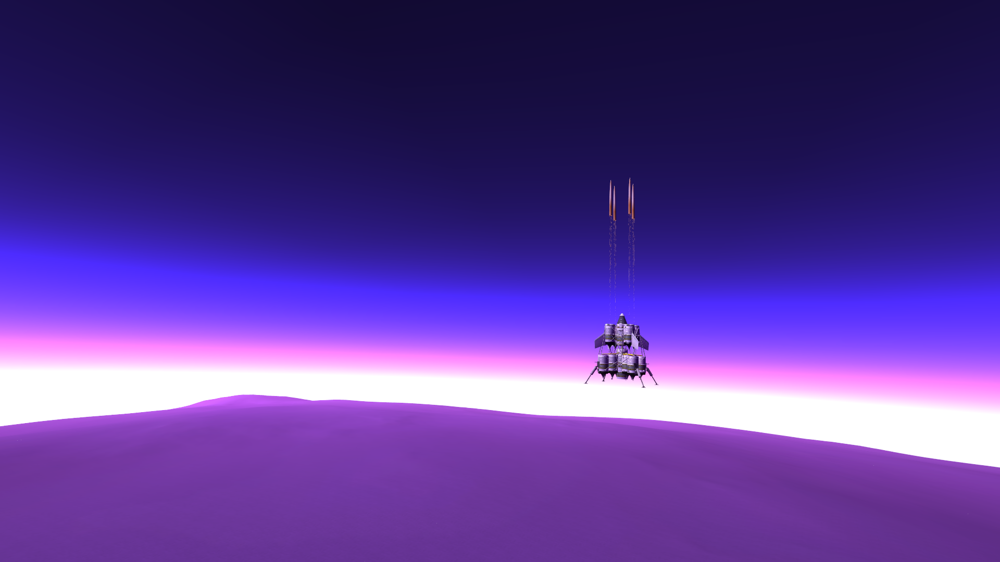

The KSPedia Online
Tips for Powered landing on planets with an atmosphere
Powered landings on planets with an atmosphere is way harder than on one without an atmosphere. The engines used for the final landing burn(s) and accent (if you plan to) need to have a heat shields attached to them when going through re-entry to stop then burning up and exploding. I also recommend you use aero-brakes and drogue parachutes to keep the vehicle pointed straight down to stop it falling to fast. The aerobrakes also keep the heatshield protecting the vehicle by pointing it stright down. Loss of control due to lack of aerodynamic control surfaces can be a major issue on dense planets as the re-entry phase can be quite violent and hot.

When you start getting close to the ground, start your suicide burn then increase or decrease throttle accordingly, depending on height and speed above the landing site. You should aim to land at around 5 m/s or lower to stop bouncing and tipping over when using landing gear. ALSO make sure you equip SAS (stability assisit system) and reaction wheels to keep the vehicle stable when it first impacts the ground.
